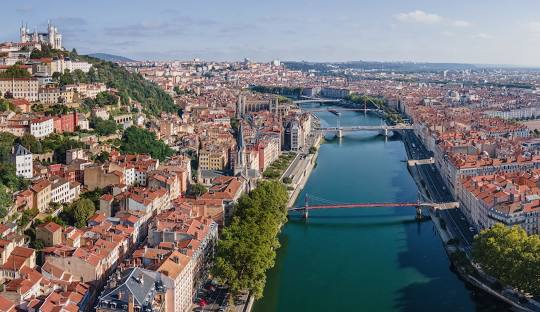

Itinerario del Día
El tercer día comienza con la salida desde Nîmes hacia Lyon. Al llegar a Lyon, tendrás tiempo para explorar la ciudad antes de descansar en tu alojamiento.
⛽ 1. Reposta en Nîmes, antes de salir
Las gasolineras tanto de centros comerciales como de cadenas independientes en la ciudad son hasta un 15–20 % más baratas que las estaciones en la autopista.
- Auchan Nîmes (200 Av. du Dr. Claude Baillet):
- SP95 (E10): 1,629 €/l
- Leclerc Route de Beaucaire:
- SP95: no listado pero suele ser similar
- Station Nemodis (Leclerc):
- SP95: 1,689 €/l
✅ Recomendación en Nîmes: para una parada cómoda en ruta, reposta en Auchan o Leclerc, situados justo antes de salir en dirección norte.
Ruta y tiempo de viaje
- Nîmes → Lyon: 245 km (2h 30min)
- Distancia total: 245 km
- Tiempo total: 2 horas y 30 minutos + paradas
Llegada a Lyon
Lyon es una ciudad histórica y culturalmente rica, conocida por su gastronomía y su arquitectura.
🗓️ Ruta recomendada para la tarde del miércoles 16 en Lyon
- 🕑 14:00 – Llegada y check-in en Ibis Styles Lyon Bron Eurexpo
El hotel está en las afueras (Bron), a unos 25–30 min en coche o transporte público del centro de Lyon.
Podéis dejar el coche allí y tomar tranvía T5 → metro D hasta Vieux Lyon (centro histórico).
🏙️ Plan para la tarde (15:00–20:00)
- 🕒 15:00 – Subida a la Basílica de Fourvière
Las mejores vistas de Lyon. Se sube en funicular desde el barrio de Vieux Lyon (estación "Vieux Lyon – Cathédrale St-Jean").
⛪ Visita la Basílica (gratuita) y pasea por los jardines.
📸 Disfruta las vistas panorámicas de toda la ciudad desde la colina. - 🕓 16:00 – Descenso a pie y paseo por el casco antiguo (Vieux Lyon)
🏛️ Recorre las callejuelas medievales del Vieux Lyon.
🔍 Entra en alguna traboule (pasajes secretos entre patios).
🍦 Si hace calor, para un helado en Terre Adélice o Glacier René Nardone (muy buenas). - 🕠 17:30 – Paseo por la ribera del río Saône
Baja hacia el Quai Romain Rolland, muy agradable para caminar.
Puedes cruzar el Pont Bonaparte o el Passerelle du Palais de Justice (puente peatonal muy fotogénico). - 🕕 18:00 – Plaza Bellecour y Presqu’île
Dirígete caminando hacia la Place Bellecour, una de las más grandes de Europa.
Pasea por la Rue de la République, zona comercial y animada, con arquitectura señorial.
Si os apetece un descanso: hay muchas cafeterías con terrazas por aquí.
Cómo volver al hotel
- Desde el centro, tomad el metro D hasta Grange Blanche, luego el tranvía T5 hasta Eurexpo o un Uber si vais cansados (desde el centro ~15–18 €).
Qué ver en Lyon
- Vieux Lyon: Casco antiguo declarado Patrimonio de la Humanidad por la UNESCO
- Basilique Notre-Dame de Fourvière: Basílica con vistas panorámicas de la ciudad
- Parc de la Tête d'Or: Hermoso parque urbano con lago y zoológico gratuito
- Musée des Confluences: Museo de ciencia y antropología con arquitectura moderna
- Les Halles de Lyon Paul Bocuse: Mercado cubierto para probar la gastronomía local

Panorámica de Lyon, ciudad Patrimonio de la Humanidad y capital gastronómica de Francia.
Mapa de la Ruta
Alojamiento
Hotel en Lyon
- Dirección: 260 Avenue Jean Monnet, 69500 Bron, Francia
- Check-in: Miércoles, 16 de julio de 2025 (16:00 - 23:30)
- Check-out: Jueves, 17 de julio de 2025 (hasta las 12:00)
- Habitación: Habitación Familiar para 3 personas
- Teléfono: +33 4 72 15 65 60
- Desayuno: Incluido en la reserva
Condiciones de Cancelación
- Cancelación gratuita: Hasta las 00:00 del día de llegada
- Cargo por cancelación tardía: 94,50 € (precio total de la reserva)
Desglose del Precio
- Habitación Familiar: 94,50 €
- Impuesto municipal: 4,95 €
- Precio total: 99,45 €
Gastos Estimados
- Peajes: 15 € (estimado para la ruta)
- Gasolina: 30 € (300 km, consumo 7l/100km, 1.40€/l)
- Alojamiento: 99,45 €
- Comida y cena: 100 €
- Total estimado del día: 244,45 €
🌳 Actividades gratuitas para niños en Lyon
- Parc de la Tête d'Or: El parque urbano más grande de Lyon, completamente gratuito. Incluye un zoológico sin coste de entrada, amplias zonas de juegos, lago con alquiler de botes y grandes áreas verdes para picnic. Perfecto para pasar un día en familia al aire libre.
- Parc des Berges du Rhône: Situado en el barrio de Gerland, ofrece áreas para caminar, zonas de juegos infantiles y espacios para picnic. Lugar tranquilo y agradable para disfrutar en familia sin gastar dinero.
- Parc Blandan: Ubicado en los distritos 3, 7 y 8, cuenta con dos áreas de juegos, skate park, mesas de ping-pong y amplias zonas para correr y explorar. Ideal para que los niños se diviertan y gasten energía.
- Jardin des Curiosités: Cerca de la Basílica de Fourvière, este jardín ofrece vistas panorámicas de la ciudad y varias instalaciones artísticas que despiertan la curiosidad de los niños. Lugar tranquilo para pasear y disfrutar del paisaje.
- Jardin Rosa Mir: Pequeño jardín escondido en el barrio de Croix-Rousse, una joya arquitectónica hecha con mosaicos de piedras y conchas. Un lugar mágico que encantará tanto a niños como a adultos.